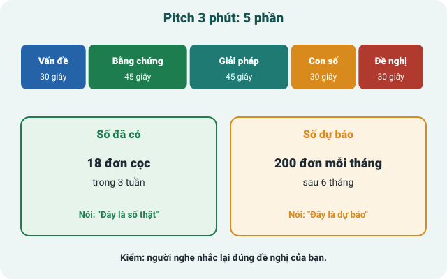

K2 · Trình bày và viết rõ ràng › Bậc 3 Vững vàng
Kể chuyện để huy động nguồn lực: pitch 3 phút
Bài này làm Tờ 7: Kịch bản pitch 3 phút. Mẫu in. Pitch dùng số liệu từ Tờ 2 và Tờ 4. Cách thuyết phục không cần chức danh có ở bài Thuyết phục không cần chức danh (N4).
1. Mục tiêu
- Soạn pitch 3 phút gồm 5 phần, kết thúc bằng đề nghị cụ thể.
- Kiểm pitch: người nghe nhắc lại được đề nghị; số đã có tách khỏi số dự báo.
2. Khởi động truy xuất
- Vì sao mô tả việc nên viết bằng kết quả 90 ngày?
- Hợp đồng lao động từ bao lâu thì thuộc diện bảo hiểm xã hội bắt buộc?
Đáp án
- Để cả hai bên biết làm tốt là thế nào, và để chọn người theo việc thật.
- Từ đủ 1 tháng.
Xem lại: Tuyển người đầu tiên.
3. Giải thích
Founder phải xin nguồn lực rất nhiều lần: vốn, khách hàng đầu tiên, đối tác, người giỏi về làm cùng. Pitch là cách xin ngắn gọn.
Người nghe thường bận. Họ cần biết ba điều: vấn đề có thật không, bạn có bằng chứng gì, và bạn muốn gì từ họ.
Tờ 7. Năm phần của pitch 3 phút
- Vấn đề (30 giây)Kể về một khách hàng cụ thể và chuyện họ gặp.
- Bằng chứng (45 giây)Kết quả phỏng vấn và thử nghiệm: số người, số đơn, số tiền.
- Giải pháp và vì sao bạn (45 giây)Bạn làm gì, khác cách hiện tại ở đâu, đội có gì.
- Con số (30 giây)Biên lợi nhuận gộp, hòa vốn, mốc tiếp theo.
- Đề nghị (30 giây)Cần gì, bao nhiêu, để đạt mốc nào, trước ngày nào.
Bằng chứng mạnh hơn tính từ. "Sản phẩm rất được yêu thích" không thuyết phục. "Trong 3 tuần, 18 người đặt cọc, 11 người mua lại" thuyết phục hơn nhiều.
Tách số đã có với số dự báo. Nói rõ: "Đây là số thật của 2 tháng qua" và "Đây là dự báo". Trộn hai loại số là cách nhanh nhất để mất lòng tin của người nghe có kinh nghiệm.
Đề nghị phải cụ thể. "Mong anh chị ủng hộ" không phải đề nghị. "Chúng tôi cần 300 triệu đồng để mở điểm bán thứ hai trước tháng 3" là đề nghị.

Tập và kiểm. Tập to thành tiếng 3 lần, bấm giờ. Rồi nói cho một người chưa biết dự án. Hỏi họ: "Tôi đang đề nghị điều gì?" Nếu họ không nhắc lại được, phần đề nghị chưa đủ rõ.
4. Ví dụ tại nơi làm việc Việt Nam
Tình huống giả định. Anh Long ở Bát Tràng (Bài 2) đã thử dòng cốc in logo. Anh cần một đối tác phân phối quà doanh nghiệp.
Vấn đề: "Chị Mai, trưởng hành chính một công ty 300 người, mỗi Tết mất 2 tuần để tìm quà có logo mà không đụng hàng."
Bằng chứng: "Trong 4 tuần, 11 công ty đặt cọc dòng cốc in logo. Đây là số thật."
Giải pháp và vì sao chúng tôi: "Gốm vẽ tay, in logo, giao trong 10 ngày. Xưởng nhà tôi làm gốm 3 đời."
Con số: "Biên lợi nhuận gộp 45%. Dự báo cần 40 đơn mỗi mùa Tết để hòa vốn lò mới. Đây là dự báo."
Đề nghị: "Tôi đề nghị anh đưa dòng cốc vào danh mục quà Tết năm nay, thử với 10 khách của anh, trước ngày 15/12."
Anh tập 3 lần, rồi nói thử với em gái. Em nhắc lại đúng đề nghị.
Vì sao cách này tốt: mở bằng một người thật, có số thật, tách rõ dự báo. Đề nghị có việc, có số lượng và có hạn.
5. Thực hành
Tình huống giả định. Chị Hạnh (Bài 1) đã chuyển sang bán rau sạch có giấy kiểm nghiệm cho nhóm phụ huynh ở quận 7. Sau 6 tuần, có 25 gia đình đặt hằng tuần. Chị cần một trường mầm non cho đặt điểm nhận rau.
Viết pitch 5 phần, mỗi phần 1–2 câu.
Gợi ý 1
Vấn đề nên kể từ góc của một phụ huynh cụ thể, không phải "mọi người".
Gợi ý 2
Đề nghị với trường mầm non: cần chỗ nào, giờ nào, bao lâu? Trường được lợi gì?
Lời giải mẫu
- Vấn đề: "Chị Ngọc, mẹ hai bé ở trường mình, từng bỏ cả bó rau vì không yên tâm về nguồn gốc."
- Bằng chứng: "Sáu tuần qua, 25 gia đình đặt rau hằng tuần, 22 gia đình chưa bỏ tuần nào. Đây là số thật."
- Giải pháp và vì sao tôi: "Rau từ hai vườn ở Đà Lạt, mỗi lô có giấy kiểm nghiệm. Tôi tự đi kiểm vườn mỗi tháng."
- Con số: "Dự báo cần 60 gia đình để hòa vốn chuyến xe hằng tuần. Đây là dự báo."
- Đề nghị: "Tôi xin đặt một kệ nhận rau ở cổng trường, 16 đến 18 giờ thứ Sáu, thử trong 2 tháng từ tháng tới. Phụ huynh nhận rau lúc đón con, trường không mất chi phí."
(Thông tin là giả định.)
6. Tự kiểm tra
Chọn đáp án. Mỗi lựa chọn đều có giải thích.
Câu 1. Câu nào là bằng chứng mạnh nhất trong pitch?
-
Chưa đúng. Đây là tính từ, người nghe không kiểm được.
-
Đúng. Đúng. Có số lượng, có thời gian, và là hành động có tốn tiền.
-
Chưa đúng. Câu chung chung, không nói gì về khách hàng của bạn.
Câu 2. Câu đề nghị nào cụ thể nhất?
-
Chưa đúng. Người nghe không biết bạn muốn họ làm gì.
-
Đúng. Đúng. Có thứ cần, số lượng, mục đích và hạn.
-
Chưa đúng. Chưa rõ đối tác làm gì, góp gì, khi nào.
Câu 3. Bạn có doanh thu thật 2 tháng và một dự báo cho 12 tháng. Trình bày thế nào?
-
Chưa đúng. Gộp làm người nghe không phân biệt số thật với số dự báo.
-
Đúng. Đúng. Tách hai loại số giữ lòng tin của người nghe có kinh nghiệm.
-
Chưa đúng. Số thật dù nhỏ vẫn là bằng chứng mạnh nhất bạn có.
Câu 4. Cách kiểm nào cho biết phần đề nghị đã đủ rõ?
-
Chưa đúng. Khen bài nói không cho biết họ hiểu bạn muốn gì.
-
Đúng. Đúng. Nếu họ nhắc lại được, đề nghị đã đủ rõ.
-
Chưa đúng. Đúng giờ là tốt, nhưng chưa cho biết đề nghị có rõ không.
7. Phản tư
- Trong lần xin nguồn lực gần nhất, bạn có nói rõ mình muốn gì không?
- Con số nào trong kế hoạch của bạn là dự báo, nhưng bạn hay nói như số thật?
8. Áp dụng thật
Trong 7 ngày tới, điền Tờ 7 cho một người bạn cần xin nguồn lực. Tập 3 lần, bấm giờ. Nói thử với một người và hỏi họ nhắc lại đề nghị.
Mức bằng chứng. Năm phần của Tờ 7 và cách phân bổ thời gian là cách làm do site đề xuất. Việc dựa trên bằng chứng từ thử nghiệm nối với cách tiếp cận giả thuyết ở Bài 2. Site chưa tìm thấy nghiên cứu có bình duyệt đủ mạnh về một cấu trúc pitch cụ thể.
9. Siêu dữ liệu
| skill | K2 · Trình bày và viết rõ ràng |
|---|---|
| level | Bậc 3 · Vững vàng |
| group | N7 |
| framework_map | EntreComp: Mobilising resources; Mobilising others; Vision; WEF: Leadership and social influence; CSfW: 2a Communicate for work; SkillsFuture CCS: Communication; Influence; NACE: Communication (chỉ dẫn chiếu) |
| updated | 2026-11-14 |
Hoàn thành bài
Đánh dấu đã học để site gợi ý lịch ôn sau 1, 3 và 7 ngày. Dữ liệu chỉ lưu trên máy của bạn.
Lịch ôn gợi ý: